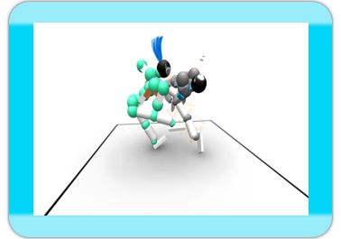
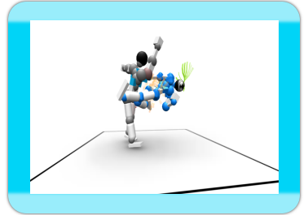

Avez-vous déjà joué un de ces jeux de combats où vous devez appuyer sur une combinaison de boutons pour effectuer un coup de poing/pied ? Un de ces jeux où votre adversaire peut s'en sortir juste en appuyant sur tous les boutons en continu ?
Nous savons ce que ça donne et nous sommes là pour changer cela !
Toribash est un jeu de combats en ligne où vous réalisez vos propres mouvements.
Utilisez avec précision le contrôle du mouvement pour créer le mouvement que vous souhaitez, limité simplement par votre imagination.
Manipulez vos articulations pour un impact maximum et démembrez votre adversaire avec des coups précis.
"Boostez" vos articulations pour y ajouter de la vitesse et de la force et rendre vos coups plus puissants. Attrapez vos adversaires et écrasez les au sol.
Vous voulez réaliser vos propres scènes de combat ?
Dirigez-vous dans l'éditeur de replays ! Vous pouvez éditer les replays à partir de n'importe quel moment dans le temps et modifier votre combat afin de parvenir à faire cette décap que vous aviez loupé. Une fois que vous avez terminé, vous pouvez partager les replays avec vos amis en ligne !
Combattez en ligne et défiez des joueurs du monde entier au travers de la Connexion Wi-Fi Nintendo.

Astuce de pro #1
Frappez votre adversaire au niveau des articulations. ;)
Toribash - La Violence Perfectionnée